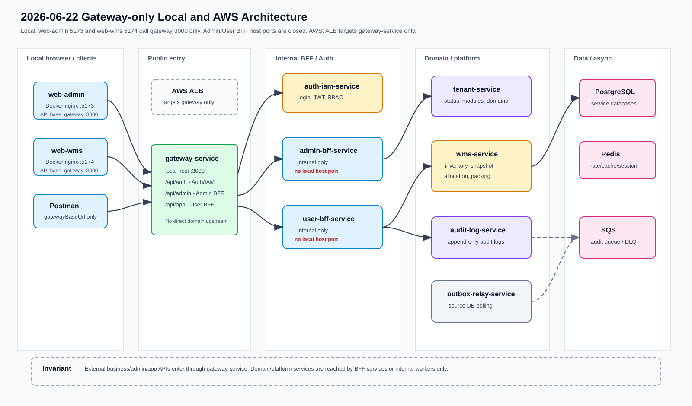
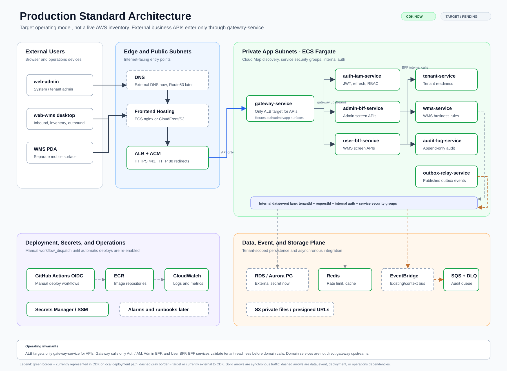

Infra · Architecture Snapshot
아키텍처/인프라 상태
2026-06-22 기준 로컬 실행과 CDK 검증 상태를 함께 반영한 스냅샷입니다.
외부 업무 API는 로컬과 AWS 모두 gateway-service를 단일 진입점으로 사용하고, Admin/User BFF는 직접 노출하지 않습니다.
오늘 변경 요약
| 로컬 단일 진입점 | docker/local/docker-compose.yml에서 admin-bff-service, user-bff-service host port 노출을 제거했습니다. 두 BFF는 compose 내부 네트워크 3000만 사용하고, 브라우저와 Postman은 http://localhost:3000 gateway만 호출합니다. |
|---|---|
| Web Docker | web-admin은 http://localhost:5173, web-wms는 http://localhost:5174에서 nginx 컨테이너로 실행합니다. 두 프론트는 build arg VITE_API_BASE_URL=http://localhost:3000으로 gateway를 API base URL로 사용합니다. |
| Gateway upstream | /api/auth/**는 Auth/IAM, /api/admin/**은 Admin BFF, /api/app/**은 User BFF로 전달합니다. gateway는 tenant-service, wms-service, audit-log-service, outbox-relay-service를 직접 호출하지 않습니다. |
| BFF downstream | Admin BFF는 Auth/IAM, tenant-service, audit-log-service를 호출합니다. User BFF는 Auth/IAM, tenant-service, wms-service, audit-log-service 또는 EventBridge audit 경로를 사용합니다. |
| CDK 상태 | CDK 수정 없이 synth와 산출물 검사를 통과했습니다. ALB target group은 gateway-service만 포함하고, Admin/User BFF security group ingress는 gateway-service security group에서 들어오는 2개 규칙만 허용합니다. |
| 검증 로그 | 2026-06-22 로컬 Gateway 단일 진입점 검증에 compose, Docker build, nginx smoke, CDK 산출물 검사 evidence를 남겼습니다. |
구조도

운영 기준 아키텍처
아래 구조도는 실제 AWS 계정의 실측 배포 현황이 아니라, 운영 배포 시 지켜야 할 목표 기준입니다. 현재 CDK와 로컬 배포 경로에 이미 반영된 항목은 녹색 실선으로, CDK 밖이거나 후속 결정이 필요한 항목은 회색 점선으로 구분했습니다.

| 외부 진입 | 사용자, 관리자, PDA 화면의 업무 API는 DNS/ALB를 거쳐 gateway-service로만 들어갑니다. Route53 record는 아직 CDK 밖이며, hosted zone 도입 전까지는 외부 DNS가 ALB DNS name을 가리키는 기준입니다. |
|---|---|
| 프론트 배포 | web-admin, web-wms는 로컬 Docker/nginx 배포 경로를 갖췄지만 운영 CDK에는 아직 포함되지 않았습니다. 운영 기준 구조도에는 ECS nginx 또는 CloudFront/S3 후보를 후속 결정 항목으로 표시했습니다. |
| Backend 경계 | gateway-service는 Auth/IAM, Admin BFF, User BFF만 upstream으로 호출합니다. tenant-service, wms-service, audit-log-service, outbox-relay-service는 gateway 직접 upstream이 아니며 BFF 또는 내부 이벤트 경로로만 접근합니다. |
| 데이터/이벤트 | PostgreSQL은 현재 외부 Secrets Manager secret으로 연결하고, RDS/Aurora 생성은 후속 CDK 범위입니다. Redis, 감사 SQS/DLQ, outbox-relay ECS 경로는 CDK 기준에 포함되며, EventBridge bus 생성은 현재 context 또는 외부 리소스 기준입니다. |
| 운영 보안 | HTTPS는 ACM ARN이 있을 때 ALB 443 listener로 제공하고 HTTP 80은 HTTPS로 리다이렉트합니다. 런타임 secret은 Secrets Manager 또는 SSM Parameter Store에서 주입하고, 서비스 간 호출은 내부 인증과 security group을 함께 사용합니다. |
현재 노출 기준
gateway-service:3000, web-admin:5173, web-wms:5174가 업무 진입점입니다. Auth/Tenant/WMS/Audit/Outbox 포트는 로컬 검증 편의를 위해 남아 있으나 Admin/User BFF 포트는 열지 않습니다.
인터넷 facing ALB는 gateway-service만 target으로 연결합니다. 다른 backend service는 Cloud Map과 security group 기반 내부 연결만 사용합니다.
web-admin은 /api/admin/**, web-wms는 /api/app/**를 gateway로 호출합니다. BFF URL을 브라우저 API base URL로 사용하지 않습니다.
CDK 포함 범위
ALB, ECS Cluster, ECS Fargate service/task definition, ECR repository, Cloud Map, service security group, CloudWatch log group, ElastiCache Redis, audit event SQS queue/DLQ.
Auth/IAM, tenant, WMS, audit-log DB URL, source별 outbox DB URL, service-to-service internal auth secret, JWT secret 또는 key pair ARN은 기존 Secrets Manager secret을 참조합니다.
Route53 record, RDS/Aurora 생성, S3, EventBridge bus 생성, CloudFront, OpenSearch, MSK는 아직 CDK 스택 밖입니다.
검증 기준
docker compose -f docker/local/docker-compose.yml config --quiet
docker compose -f docker/deploy/docker-compose.yml config --quiet
docker compose -f docker/local/docker-compose.yml build web-admin web-wms
pnpm --filter @multi-tenant/infra-cdk synth
pnpm --filter admin-bff-service typecheck
pnpm --filter user-bff-service typecheck